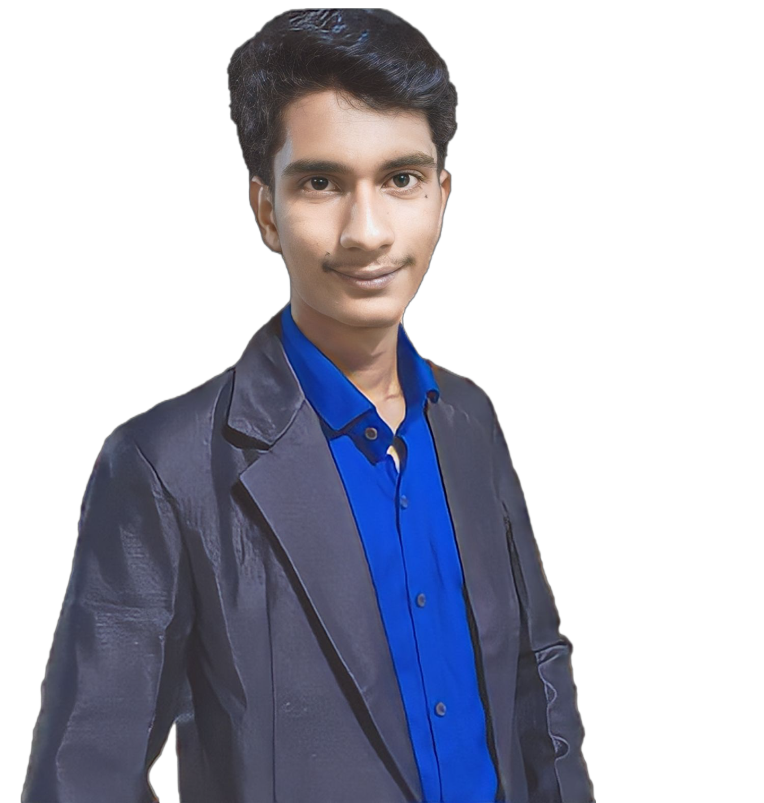

Hello there!
I'm Ritik Upadhyay, a dedicated computer science student with a passion for turning ideas into innovative digital solutions. Currently pursuing my B.tech[CS] in Mahakal institute of Technology and Managment, I'm on an exciting journey to explore the endless possibilities of the tech world.
My fascination with computer science began when I tinkered with my first lines of code, igniting a curiosity that has only grown since. As I dove deeper into the field, I found myself captivated by the power of algorithms and the creativity in crafting elegant code. Each project I undertake is a chance to learn, experiment, and push boundaries.
From developing interactive web applications to diving into the world of Artificial Intelligence, I've had the privilege of working on projects that challenge me and push me to expand my skill set. Whether it's collaborating with talented peers or solving intricate problems, I find joy in every step of the process.
My journey in computer science isn't just about writing code; it's about embracing challenges and constantly evolving. I believe that technology has the potential to reshape the world, and I'm excited to be part of that transformation. With an eye for detail and a knack for turning complex ideas into actionable plans, I'm committed to bringing meaningful contributions to the tech community.
When I'm not immersed in lines of code, you can find me exploring the outdoors, playing the guitar, or seeking inspiration in a good book. Feel free to explore my portfolio, where I've shared some of my projects, experiences, and thoughts. If you're as passionate about tech and innovation as I am, let's connect and collaborate on the next big thing!